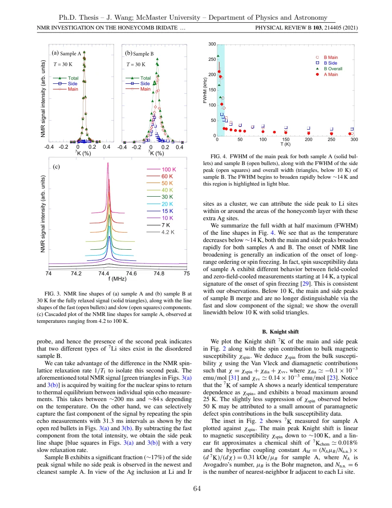

Wang · supplied source 2024 · chapter unit
6 · Ag₃LiIr₂O₆: disorder can obscure order
Sample comparison and local distributions reveal why a weak bulk signature is inconclusive.
The question: How do the cleaner and more disordered specimens change the magnetic inference?
Before you start: the terms you need
- Quantum spin liquid candidate: a material tested against a quantum-disordered model; a null ordering signal is insufficient identification.
- K: local resonance shift, sensitive to a coupling-weighted static susceptibility.
- 1/T₁: recovery rate that samples fluctuations in the probe frequency window.
- ILT: constrained, regularized inference of a relaxation-rate distribution from recovery data.
- log-rate density: probability is the area in d log₁₀(1/T₁), not peak height.
See → explain → check
Follow the idea in 2 pictures.
Picture 1 / 2
Keep A and B distinct
Look for: The additional lithium signal in B follows a different local response.
Swipe across the picture to read every label, or enlarge it below.
- Cleaner sample A
- Disordered sample B
Actual sample distinction; panels are conceptual rather than reconstructed spectra.
A defect-affected nucleus is not a direct count of defect atoms.
Check the original: Original PDF p. 77 · Original PDF p. 78 · Original PDF p. 79
Picture 2 / 2
Three low-temperature clues
Look for: Static broadening, a recovery maximum and ILT weights constrain different aspects.
Swipe across the picture to read every label, or enlarge it below.
- Broadened line + sharp rate peak
- Time-window / distribution model
- Partial magnetic ordering
Observation, analysis and interpretation remain separate.
The ordering interpretation uses their combination.
Check the original: Original PDF p. 78 · Original PDF p. 79 · Original PDF p. 80 · Original PDF p. 81
Explain it back.
Try answering aloud before opening the explanation.
Does the 17% side line mean 17% Ag impurity?
No. A defect can affect several lithium nuclei. The relative observed nuclear signal is a different quantity from chemical defect concentration.
Why is the 40 K suppression not uniquely a gap?
The lithium coupling geometry may filter relevant antiferromagnetic fluctuations. The source retains a cancellation scenario.
Go deeper Follow the full argument
Use the specimen history as part of the evidence
Topochemical exchange produces a metastable iridate with honeycomb layers, and synthesis history changes disorder. Sample A is cleaner with respect to unwanted in-plane Ag inclusions; sample B has those inclusions as well as stacking faults. Neither should be relabeled an exact realization of the ideal Kitaev model. The local lithium resonance of B has an additional side component with about 17% relative signal, while A has one principal line. Because a single defect can influence nearby nuclei, that 17% is not a chemical Ag concentration. The main peak in B has a shift close to A’s, supporting the interpretation that it samples relatively cleaner regions.
Original PDF p. 74 · Original PDF p. 76 · Original PDF p. 77 · Original PDF p. 78 · Original PDF p. 79
Separate line broadening from recovery-rate peaks
Line broadening starts below roughly 14 K, consistent with the onset of slow or static magnetic fields. Sample A also has a sharp 1/T₁ maximum near 9 ± 1 K, which the author connects with critical slowing and supporting μSR ordering evidence. The broad maximum near 40 K should not automatically be called a gap. Lithium occupies a high-symmetry site among six Ir neighbors, and cancellation of hyperfine fluctuations could suppress its response even without a spin-excitation gap. The source explicitly retains that alternative. A line width and a recovery rate therefore need their separate static/dynamic windows before being combined into a phase interpretation.
Original PDF p. 78 · Original PDF p. 79 · Original PDF p. 80
What the inferred fractions mean
The low-temperature ILT analysis of A separates components whose rates vary differently, and the thesis interprets roughly 60% at 4.2 K as static on the NMR window while some fraction remains fluctuating. In B, the side peak’s small shift and slow recovery support suppressed local magnetism near inclusions, with the bulk upturn attributed to additional weakly coupled spins. The thesis proposes singlet-like regions and orphan spins as a disorder scenario. These are material interpretations constrained by several measurements; ILT alone does not image the spin configuration. The caution for QSL identification is concrete: more disorder can wash out an ordering signature that is clear in a cleaner specimen.
Original PDF p. 80 · Original PDF p. 81 · Original PDF p. 82 · Original PDF p. 117
Translate the mathematics Essential equations and their meaning
This unit is read through its observations and assumptions; no extra equation is invented.
Read the evidence Guided original source pages

Original PDF p. 78

Original PDF p. 81
What the evidence supports—and where it stops
- Partial ordering is interpreted on the nuclear time scale; the microscopic spin configuration is not fully resolved.
Source version, reading coverage and preservation
All substantive text in Chapters 1–7, the reprinted research article and numerical appendices read; original working kernels, equations and key result figures visually checked.
Reviewed body pages: 15, 16, 17, 18, 19, 20, 21, 22, 23, 24, 25, 26, 27, 28, 29, 30, 31, 32, 33, 34, 35, 36, 37, 38, 39, 40, 41, 42, 43, 44, 45, 46, 47, 48, 49, 50, 51, 52, 53, 54, 55, 56, 57, 58, 59, 60, 61, 62, 63, 64, 65, 66, 67, 68, 69, 70, 71, 72, 73, 74, 75, 76, 77, 78, 79, 80, 81, 82, 84, 85, 86, 87, 88, 89, 90, 91, 92, 93, 94, 95, 96, 97, 98, 99, 100, 101, 102, 103, 104, 105, 106, 107, 108, 109, 110, 111, 112, 113, 114, 115, 116, 117, 118, 119, 120, 121, 122, 123. Personal acknowledgements omitted from teaching content. Bibliographies and external supplements not independently re-read; only material actually present in the thesis is covered.
Source SHA-256: 80ad8aaad2ce3f48320bef046c30907939f8018990292aa5ebb7e5269d912da2. Original file bytes preserved locally; public scientific page images are rendered from that source.
Thesis - Wang - 2024 - Disordered spin liquids - NMR and inverse Laplace analysis.pdf